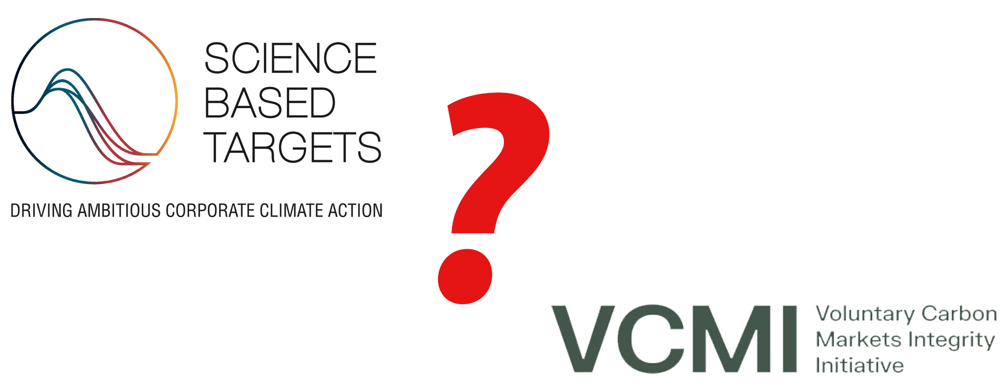

TLDR: SBTi and VCMI are ineffective in combating climate change due to conflicts of interest, flawed metrics, and reliance on voluntary measures. Instead, companies should consider a simplified system focused on direct emissions accountability and individual responsibility.

I’ve finished exploring the non-profits SBTi (Science-Based Targets Initiative) and VCMI (Voluntary Carbon Markets Integrity Initiative). These organizations share many potential conflicts of interest and certainly seem insincere. In particular, if you use “science-based” in your name, your leadership ought to include a preponderance of scientists or at least have a management team that defers to data-based, scientific judgment. SBTi’s doesn’t, and that’s a problem. For VCMI, a “voluntary” market is both a tautology and an oxymoron. It’s a fundamental tenet of capitalism that any purchase is a choice, either between products or between buying and saving, so all true markets are voluntary by definition. Carbon markets are NOT true markets. They’re closer to taxes, so voluntary carbon markets are akin to voluntary taxes.
Yep. That’ll work.
Last time, I suggested a rational path forward, a radical simplification to align corporate net zero objectives more directly with the global need to reduce emissions. With this simplification, every corporation would be bound by accounting norms to report their emissions, eliminating the need for “scopes.” The only emissions that count would be those currently tabulated as Scope 1, i.e., those under the company's direct control. The rationale is that Scopes 2 and 3 are hard to measure accurately and don’t work to reduce emissions. They double-count emissions along the value chain and incentivize bad behavior through blame-shifting and creative accounting. And if purely financial gimmicks like carbon credits were eliminated, corporations could no longer buy their way out of an emissions pledge. In this way, the “voluntary” market would also become an actual, capital-efficient market because engineering and economics must align for companies to meet their stated obligation for net zero emissions.
Let me draw an analogy with financial accounting: In our capitalist system, each corporation seeks to maximize profits on behalf of shareholders. To maximize profit, participants in any value chain have two levers: (1) They can reduce their operational costs, and (2) they can negotiate with adjacent links to maximize their economic “rents”, the disproportionate value they add to a value chain that ends with the user. By analogy, in the carbon realm, each corporation with a net zero pledge seeks to minimize emissions on behalf of stakeholders. If, as on an income statement, individual corporations only have to account for their emissions on their path to net zero, then every participant will seek to improve the carbon efficiency of their internal processes (good) and shift emissions to other participants in the value chain (bad). But, if a net zero objective also binds the other participants, negotiations will occur until a compromise is reached, where participants in the value chain with higher carbon efficiencies will dominate without forced emissions accounting beyond direct control. A network effect could be established much more simply; Any participant could pledge to do business exclusively with other participants who also conformed to the same accounting practices.
Some mathematically inclined readers will complain that “minimization” is relative while “zero” is absolute. Climate models require achieving (absolute) engineering net zero in a few short decades to prevent runaway climate change. The issue is that an engineering net zero objective equates to T - T otal Abstinence from actions that harm the environment (burning geologic carbon). If you draw an analogy with Prohibition, the 18th Amendment intended to enforce T - T otal Abstinence from actions that harm society (consuming alcohol). And we know how well that worked.
Essentially, by attempting to guilt corporations into creating a network effect for emissions reduction, the carbon police have unintentionally created a tangled web of deception and false promises, much like Prohibition created speakeasies and promoted organized crime.
Since I seem fond of analogies in this installment, let me draw another one. Right now, academic thinkers (including my least favorite Mann, Michael E. Mann of The New Climate War ) believe that they are capturing the moral high ground by targeting oil companies as the agents of climate change. Environmental disasters such as oil spills paint a target on these companies in the public eye, and it’s easy to argue that eliminating geologic carbon from our energy mix is one possible solution to the climate problem. But blame shifting is irresponsible: We are all to blame for climate change, which will affect us all.
To explain in somewhat more graphic detail, let’s look at the situation from a more personal perspective. I don’t know about you, but I want to lose a little weight. I know that I could achieve that objective quickly by going on a starvation diet, and I have enough willpower to endure the hardship, at least for a while. However, I cannot, in good conscience, blame the fast food industry or the grocery stores that sell high-calorie foods for my weight problem, although both are structured to maximize profits. The academics who address climate issues are worse than that, though: The Michael E. Mann’s of the world blame oil companies for emissions, the equivalent of blaming agriculture for obesity.